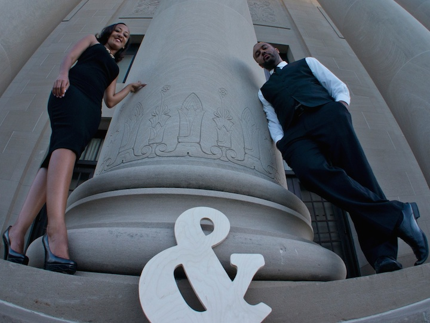

We would like to thank our parents, family, and friends for being a part of our wedding!

Zemenayi Molla
Mother of the Bride, Zemenayi is a Registered Nurse by trade and socialite by choice. Born in Gondar Ethiopia, she eventually found her way to Addis Ababa where she studied to be a Chemist. She eventually also came to the United States with her children and persevered to attain her Bachelors of Science in Nursing. She currently lives in Nashville TN, but plans to relocate wherever the grandchildren will be.
Belay Eshete Tessema
Father of the Bride, Dr. Tessema currently practices Internal Medicine at the Veterans Affair. Born in Waliso Ethiopia, he worked his way through many trials and tribulations, to fulfill his dreams of becoming a Physician. First in Ethiopia then specializing in Ophthalmology in Chechozlovia. He eventually also fulfilled his other dream of coming to the United States and later bringing his family to join him. He has finally settled in the Washington DC area where he enjoys visiting the local museums and having coffee with his friends from medical school.
Lola T. Brown
Mother of the groom, Dr. Lola T. Brown recently retired after running a successful pediatric practice for over fifteen years in Huntsville AL. Born and raised in Brenhum Texas, she graduated from the University of Texas Southwestern where she completed both her undergraduate and medical degree. She currently is filling her days relaxing, exercising and traveling. Her current passion is her grandson and she is looking forward to having more to spoil.
Charles E. Brown Jr.
Father of the Groom is the late Dr. Charles Emerson Brown Jr. Prior to his passing he practiced medicine in Irvine, CA. Raised in sunny California, he completed his undergrad at Harvard University and earned his Medical Degree from the University of California, Irvine.
Please watch our Engagement Video
Watch Now! We hope that you are able to share with us this wonderful experience!
Bridesmaids & Groomsmen's
- Ruth Belay Maid of Honor and younger sister of the Bride. Ruth is currently living the dream while in her third year of medical school at Loma Linda University. She hopes that soon she will be cutting people open and traveling the world to become a “history wiz”.
 Eric Brown Best Man, older brother of groom
Eric Brown Best Man, older brother of groom Menna Eshete California native Menna is the brides first cousin. She currently lives in Southern California refusing to return to their shared hometown of Fresno. She loves having “mini self concerts” and spending time with her church friends.
Menna Eshete California native Menna is the brides first cousin. She currently lives in Southern California refusing to return to their shared hometown of Fresno. She loves having “mini self concerts” and spending time with her church friends.
 Charles Brown III Groomsmen, younger brother of groom
Charles Brown III Groomsmen, younger brother of groom Dagmawet Desalegne Also known as Dee, she is probably one of the sweetest person that you will ever meet. She currently lives in Nashville TN and is also engaged to be married. Make sure to ask her how she met the Bride and found out that they are actually cousins. In ten years she hopes that she will have “four mini me kids”.
Dagmawet Desalegne Also known as Dee, she is probably one of the sweetest person that you will ever meet. She currently lives in Nashville TN and is also engaged to be married. Make sure to ask her how she met the Bride and found out that they are actually cousins. In ten years she hopes that she will have “four mini me kids”. Cecil Webster Groomsmen, cousin of groom
Cecil Webster Groomsmen, cousin of groom- Hiruth Tesfaye Engineer by day and gourmet chef by night, Hiruth is one of the kindest people that you will ever meet. Random weekend trips to Atlanta is what brought Hiruth and the Bride together. When asked what is your favorite thing in the world, her answer would always be “Jojo.”
- Jevon O'Neal Groomsmen, good friend
- Ashley Nnorom Aspiring to become a Physician Assistant, Ashley now lives in the warm state of Florida. After she graduates the first thing she hopes to do is go on a cruise, where she is not sure about yet. Good friend of the Bride, these two have known each other since college and plan to go on lots of trips together!
- Antoine Lynch Groomsmen, good friend
- Stephanie Fuller There is something uniting about dating brothers that is why Stephanie and the Bride hit it off from the start. They also share the love of traveling, good food, and playing games, even though Stephanie always wins.This true Texan is currently studying to become a Nurse Practitioner and the Captain’s first mate.
 Neema Atashi Groomsmen, good friend
Neema Atashi Groomsmen, good friend